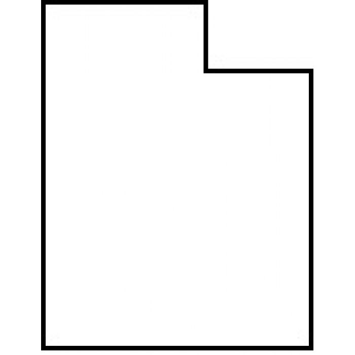
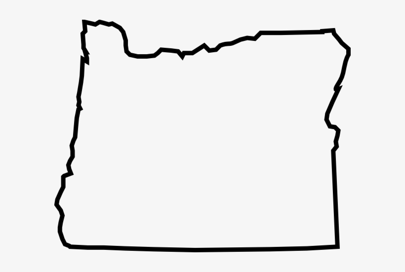

Overview
Our Purpose: Create a Community of enthusiastic coders!
We will give the basic WDD_130 Web fundamentals information learned throughout this semester This is partly by me myself teaching through this website.
Audience
My audience is the student that is having troubles with their web fundamentals class. I will explain assignments in a more easier light so you, the reader can hopefully understand the text I create. This will be as accesable as I can earn to make it for students.
Branding
Website Logo
 for the colors you have chosen below. You should have at least 2 colors but do not have to fill in all 4 if you do not need them. -->
<!-- Copy and paste the URL to your finished palette below. Replace the href value that is there with yours. Make sure to paste it into both the href value and the content text of the <a> tag -->
<p>Palette URL:</p>
<a href=) https://coolors.co/022b3a-1f7a8c-bfdbf7-e1e5f2-EE6352
https://coolors.co/022b3a-1f7a8c-bfdbf7-e1e5f2-EE6352
| Primary | Secondary | Accent 1 | Accent 2 |
|---|---|---|---|
| #022b3a | #1f7a8c | #bfdb7 | #EE6352 |
Typography
Heading Font: [Arial Black]
Paragraph Font: [Tahoma]
Normal paragraph example
The best Whitewater Rafting in Colorado, White Water Rafting Company offers rafting on the Colorado and Roaring Fork Rivers in Glenwood Springs. Since 1974, we have been family owned and operated, rafting the Shoshone section of Glenwood Canyon and beyond.
Colored paragraph example
Trips vary from mild and great for families, to trips exclusively for physically fit and experienced rafters. No matter what type of river adventures you are seeking, White Water Rafting Company can make it happen for you.
Navigation
Site Map
Wireframes
Home

[Local Rivers]
Local
River
Aventures
Main Fork River Idaho
Nestled deep in the Frank Church Wilderness of No Return winds the Salmon river. The Salmon was given the nickname long ago as the River of No Return by the people living near it because of the number of folks that came to visit and fell so in love with the rugged beauty of the river that they never left.
Herds of elk and deer graze on the hillsides around the river and bear and bighorn sheep are also commonly sighted. The river corridor is also lined with awe inspiring ponderosa pine which tower over the sandy beaches in the campsites and provide shelter from sun or rain when needed.
Let's not forget the rapids! They range from class I-IV. The Salmon is one of the longest undammed rivers in the United States. As a free flowing river the water is higher, faster, and colder in the early summer and lower, slower, and warmer in the late summer. There are good rapids all summer...but families with children who like to swim tend to appreciate the late summer's slower, warmer water more.

Desolation & Grey Canyon Utah

Winding through canyons in central Utah, in some of the most desolate land anywhere, the Green river flows towards the mighty Colorado river and the sea. High grey stone cliffs, beautiful desert scenery, and great rapids have made this run famous. This 84-mile trip runs from from Sand Wash to Swaseys Rapid (just outside Green River Utah) and boasts outstanding scenery, interesting geologic formations, evidence of prehistoric and historic human activity, and great whitewater opportunities.
Desolation is rated a Class II/III and is usually done in 6 days
Desolation Canyon has been recognized as a National Landmark. This designation is based on the uniqueness and rich history that the canyon tells.

Owyhee River Oregan

The Owyhee River runs thru Oregons unofficial Grand Canyon, with high canyon walls and beautiful desert wilderness. If you don’t know where the Owyhee River is, it’s far away from everywhere. In the southeast corner of the state, along the Idaho border runs Owyhee River. With Oregon River Experiences, you can choose from 4 or 5 day vacations, rafting down III+ rapids, plus enjoying the local natural hot springs and seeing the petroglyphs carved on rocks alongside the river. This trip can only be taken in the Spring, when snowmelt raises the river high enough to navigate.
Text copied from Best of the Northwest